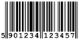

Tabellen
Tabellen dienen der übersichtlichen Darstellung von Daten mit inhaltlichem Zusammenhang. Im Wiki finden sie meist Verwendung, wenn es gilt eine Übersicht über Programme oder Funktionen zu geben oder selbige zu vergleichen. Tabellen zu erstellen ist recht einfach und wird hier mittels praktischer Beispiele erklärt.
Hinweis:
Seit September 2010 gibt es eine neue Vorlage für Tabellen, die hier beschrieben wird. Wer die Beschreibung der "alten" Tabellensyntax benötigt (die in älteren Artikeln verwendet wird und immer noch die Syntaxgrundlage bildet), findet diese unter Wiki/Tabellen/Basisformatierung.
Einführung¶
| Zelle 1 | Zelle 2 | Zelle 3 |
| Zelle über drei Spalten | ||
Diese recht einfache Tabelle wird mit diesem Code erzeugt:
{{{#!vorlage Tabelle
Zelle 1
Zelle 2
Zelle 3
+++
<-3> Zelle über drei Spalten
}}}Prinzip¶
Eine Tabelle wird durch folgendes Grundgerüst erstellt:
{{{#!vorlage Tabelle
1. Zeile/1.Spalte
1. Zeile/2.Spalte
1. Zeile/3.Spalte
+++ Es folgt Zeile 2
2. Zeile/1.Spalte
2. Zeile/2.Spalte
2. Zeile/3.Spalte
}}}Jeder Zeilenumbruch stellt eine Spalte in einer Tabellenzeile dar. Weitere Zeilen werden durch drei "+++"-Zeichen hinzugefügt, gefolgt von einem Zeilenumbruch. Jede Code-Zeile, die "+++" beinhaltet, bewirkt eine neue Tabellenzeile, weshalb diese Zeichenfolge nicht in normalen Zellen verwendet werden kann. Zusätzliche Angaben, wie z.B. eine Zeilennummerierung, sind bei diesem Zeilentrenner möglich und können den Tabellencode noch lesbarer machen.
Gliederung¶
Lange Tabellen sollen klar gegliedert und gut lesbar dargestellt sein:
| Beispieltabelle | |||
| Erste Spalte | Zweite Spalte | Dritte Spalte | Vierte Spalte |
| erste Zeile, erste Spalte | erste Zeile, zweite Spalte | erste Zeile, dritte Spalte | erste Zeile, vierte Spalte |
| zweite Zeile, erste Spalte | zweite Zeile, zweite Spalte | zweite Zeile, dritte Spalte | zweite Zeile, vierte Spalte |
| dritte Zeile, erste Spalte | dritte Zeile, zweite Spalte | dritte Zeile, dritte Spalte | dritte Zeile, vierte Spalte |
Die farbigen Teile werden durch vordefinierte Styles erstellt. Der Code obiger Tabelle sieht wie folgt aus:
{{{#!vorlage Tabelle
<-4 rowclass="titel"> Beispieltabelle
+++
<rowclass="kopf"> Erste Spalte
Zweite Spalte
Dritte Spalte
Vierte Spalte
+++
erste Zeile, erste Spalte
erste Zeile, zweite Spalte
erste Zeile, dritte Spalte
erste Zeile, vierte Spalte
+++
<rowclass="highlight"> zweite Zeile, erste Spalte
zweite Zeile, zweite Spalte
zweite Zeile, dritte Spalte
zweite Zeile, vierte Spalte
+++
dritte Zeile, erste Spalte
dritte Zeile, zweite Spalte
dritte Zeile, dritte Spalte
dritte Zeile, vierte Spalte
}}}CSS-Formatierung¶
Wie schon oben erläutert, können einzelne Zeilen (row) besonders formatiert werden. Eine spezielle Formatierung von Zeilen, Zellen oder auch der ganzen Tabelle wird durch die Notation <Formatangabe(n)> ermöglicht. Die Formatangaben müssen immer am Anfang einer Zeile oder Zelle stehen. Die öffnende Klammer (<) kennzeichnet den Beginn, die schließende Klammer (>) das Ende dieser besonderen Formatierung. Erst nach der schließenden Klammer folgt der darzustellende Inhalt:
{{{#!vorlage Tabelle
<Formatangabe> Zellinhalt
}}}Die Formatangaben können beliebig innerhalb der spitzen Klammer kombiniert werden:
| Formatkombination | ||||||
Formatangabe für diese Zeile: <rowstyle="height:4em;" -7 : v> | ||||||
| Codeteil: | < | rowstyle="height:4em;" | -7 | : | v | > |
| Bedeutung: | Beginn der Formatangabe | Zeilenhöhe 4x Schriftgröße | 7 Spalten zusammenlegen | Text zentriert | Text unten | Ende der Formatangabe |
Für die darzustellenden Inhalte gelten darüber hinaus die normalen Formatierungsregeln.
Neben den Klassen können auch eigene Formatangaben mit Hilfe von Cascading Style Sheets (CSS) gemacht werden. Siehe Zusammenfassung.
Fertige Styles¶
Um die stets wiederkehrenden Syntax-Elemente der Tabellengliederung zu vereinfachen, können verschiedene CSS-Klassen genutzt werden.
Tabellenzeilen¶
Dabei werden die Überschriften automatisch ausgerichtet, farblich hintergelegt und in Fett-Schrift formatiert:
| Human | KDE | ||
| Titel | <rowclass="titel"> | Titel | <rowclass="kde-titel"> |
| Kopf | <rowclass="kopf"> | Kopf | <rowclass="kde-kopf"> |
| Highlight | <rowclass="highlight"> | Highlight | <rowclass="kde-highlight"> |
Trennzeile: <rowclass="trennzeile"> | |||
| Xfce | Edubuntu | ||
| Titel | <rowclass="xfce-titel"> | Titel | <rowclass="edu-titel"> |
| Kopf | <rowclass="xfce-kopf"> | Kopf | <rowclass="edu-kopf"> |
| Highlight | <rowclass="xfce-highlight"> | Highlight | <rowclass="edu-highlight"> |
Trennzeile: <rowclass="trennzeile"> | |||
| Ubuntu Studio | Lubuntu | ||
| Titel | <rowclass="studio-titel"> | Titel | <rowclass="lxde-titel"> |
| Kopf | <rowclass="studio-kopf"> | Kopf | <rowclass="lxde-kopf"> |
| Highlight | <rowclass="studio-highlight"> | Highlight | <rowclass="lxde-highlight"> |
Trennzeile: <rowclass="trennzeile"> | |||
Andere Klassen¶
Neben diesen CSS-Klassen für die verschiedenen Ubuntu-derivate gibt es noch weitere Klassen:
| Die Klasse Verlauf | |
<rowclass="verlauf"> | Horizontaler Farbverlauf, Text automatisch zentriert und fett |
| Eine Zelle als Befehl formatiert | |
<cellclass="befehl"> Terminalbefehl | Beschreibung |
| Beschreibung | <cellclass="befehl"> Terminalbefehl |
Textausrichtung¶
Wird keine Angabe zur Textausrichtung gemacht, so wird automatisch links ausgerichtet.
| Textausrichtung | |||||||||
<(> | <:> | <)> | <^> | <v> | |||||
| Linksbündig | Zentriert | Rechtsbündig | Oben | Unten | |||||
Zeilenumbruch¶
Um innerhalb einer Zelle einen Zeilenumbruch zu erzwingen kann [[BR]] genutzt werden.
| Zeilenumbruch | |
Text [[BR]] Text | Text Text |
| eine Zelle mit Zeilenumbruch | eine Zelle ohne Zeilenumbruch |
Zellen verbinden¶
Zellen können über Zeilen und über Spalten hinweg verbunden werden.
| Zellen verbinden | |||
<|2> | <-2> | < > | |
| Zelle über zwei Zeilen | Zelle über zwei Spalten | leer | |
| leer | leer | leer | |
| leer | leer | leer | leer |
Zur Veranschaulichung der Code dazu:
{{{#!vorlage Tabelle
<-4 tablestyle="width: 75%;" rowclass="titel"> Zellen verbinden
+++
<rowclass="kopf" :> `<|2>`
<-2 :> `<-2>`
<:> `< >`
+++
<|2 :> Zelle über zwei Zeilen
<-2> Zelle über zwei Spalten
''leer''
+++
''leer''
''leer''
''leer''
+++
''leer''
''leer''
''leer''
''leer''
}}}Breitenangabe¶
| Breitenangaben | |
| Syntax | Resultat |
tablestyle="width: 75%;" | Tabellenbreite über 75% der Seitenbreite. |
cellstyle="width: 60%;" | Spaltenbreite von erster Spalte auf 60% gesetzt.  Spaltenbreiten orientieren sich an der Tabellenbreite und nicht an der Seitenbreite. Spaltenbreiten orientieren sich an der Tabellenbreite und nicht an der Seitenbreite. |
cellstyle="white-space: nowrap;" | Die Tabellenzelle wird möglichst nicht umbrochen. Für Optionen mit Parametern geeignet: --option PARAMETER (der Parameter soll möglichst in der selben Zeile stehen) |
Verwendete Farben¶
| Standard-Farben | |||||||||||
| Human | KDE | Xfce | Edubuntu | Studio | Lubuntu | ||||||
| Farbe | Farbcode | Farbe | Farbcode | Farbe | Farbcode | Farbe | Farbcode | Farbe | Farbcode | Farbe | Farbcode |
#E2C890 | #0057AE | #B3DEFD | #9c0000 | #171717 | #212121 | ||||||
#F9EAAF | #418DD4 | #EFEFEF | #d39528 | #525252 | #0b60a3 | ||||||
#EEEEEE | #C0DAFF | #DDDDDD | #f4f2e7 | #009bf9 | #474747 | ||||||
Zusammenfassung¶
Im Prinzip lassen sich sämtliche Formatoptionen, die HTML bietet, auch hier verwenden. Die Formatattribute werden dann je nach Art auf die gewählte Tabellenzelle (Syntax-Elemente und cellstyle), Tabellenzeile (rowstyle) oder gleich auf die ganze Tabelle (tablestyle) angewendet. Wobei Style-Angaben mit Hilfe von Cascading Style Sheets (CSS) gemacht werden. Eine gute Dokumentationen dazu findet man bei SELFHTML  und CSS 4 You .
und CSS 4 You .
| Formatoptionen | |
| Attribut | Auswirkung |
tablestyle="Attribut:Wert;" | Formatiert die ganze Tabelle |
rowstyle="Attribut:Wert;" | Formatiert eine Zeile |
rowclass="Klasse" | Formatiert eine Zeile mit einer von Ubuntuusers.de vordefinierten Klasse |
cellstyle="Attribut:Wert;" | Formatiert eine einzelne Zelle |
cellclass="befehl" | Formatiert eine einzelne Zelle als Befehl |
Besondere Tabellen¶
Dienste¶
Informationen, welche Funktionen die einzelnen Programme unterstützen, sollen in einer tabellarischen Übersicht mit folgenden Farben hinterlegt werden:
| Funktionsübersicht | ||||
| Programm/Dienst | Dienst 1 | Dienst 2 | Dienst 3 | Dienst 4 |
| Beispielprogramm 1 | Ja | Ja | Bedingt | Nein |
| Beispielprogramm 2 | Nein | Ja | Ja | Nein |
| Beispieldienst 1 | Nein | Ja | Ja | Nein |
| Beispieldienst 2 | Ja | Ja | Bedingt | Nein |
Die Werte in Zeile 4 bis 8 geben die prozentuale Ausdehnung der jeweiligen Spalte auf dem Monitor an und können problemlos variiert werden.
{{{#!vorlage Tabelle
<-5 tablestyle="width: 75%;" rowclass="titel">Funktionsübersicht
+++
<cellstyle="width: 40%;" rowclass="kopf"> Programm/Dienst
<cellstyle="width: 15%;"> Dienst 1
<cellstyle="width: 15%;"> Dienst 2
<cellstyle="width: 15%;"> Dienst 3
<cellstyle="width: 15%;"> Dienst 4
+++
Beispielprogramm 1
<cellclass="gruen">Ja
<cellclass="gruen">Ja
<cellclass="gelb">Bedingt
<cellclass="grau">Nein
+++
Beispielprogramm 2
<cellclass="grau"> Nein
<cellclass="gruen">Ja
<cellclass="gruen">Ja
<cellclass="grau">Nein
+++
<-5 rowclass="highlight">
+++
Beispieldienst 1
<cellclass="grau">Nein
<cellclass="gruen">Ja
<cellclass="gruen">Ja
<cellclass="grau">Nein
+++
Beispieldienst 2
<cellclass="gruen">Ja
<cellclass="gruen">Ja
<cellclass="gelb">Bedingt
<cellclass="grau">Nein
}}}
Spiele-Infobox¶
Bei Spiele-Artikeln ist es praktisch, Informationen zum Spiel und Systemvoraussetzungen in einer Tabelle am Ende des Artikels zusammenzufassen. Damit dabei ein einheitliches Muster mit Wiedererkennungswert entsteht, sollte diese Vorlage genutzt werden:
| Spielname | |
| Originaltitel: | Originaltitel meist Englisch (Hier kann auch der Alternativtiel oder der Ursprungstitel angegeben werden.) |
| Genre: | Genre z.B. Adventure |
| Sprache: | Länderfähnchen z.B.  |
| Veröffentlichung: | Jahr der Veröffentlichung / Fortlaufende Entwicklung = Erscheinungsjahr gefolgt von + z.B. 2013+ |
| Publisher: | Name des Herausgebers (Alternativ kann der Entwickler aufgeführt werden.) |
| Systemvoraussetzungen: | Minimale offizielle Systemvoraussetzung |
| Medien: | Bezeichnung (Anzahl) - z.B. Diskette (7) / CD (1) / DVD (1) / Download |
| Strichcode / EAN / GTIN: | 5901234123457 |
| Läuft mit: | z.B. DOSBox, ScummVM, Wine und/oder nativ |
[[Bild(Wiki/Icons/games.png, 48, right)]]
= Infobox =
{{{#!vorlage Tabelle
<-2 tablestyle="width: 97%;" rowclass="verlauf">Spielname
+++
Originaltitel:
Originaltitel meist Englisch (Hier kann auch der Alternativtiel oder der Ursprungstitel angegeben werden.)
+++
Genre:
Genre z.B. Adventure
+++
Sprache:
Länderfähnchen z.B. {de} {en}
+++
Veröffentlichung:
Jahr der Veröffentlichung / Fortlaufende Entwicklung = Erscheinungsjahr gefolgt von + z.B. 2013+
+++
Publisher:
Name des Herausgebers (Alternativ kann der Entwickler aufgeführt werden.)
+++
Systemvoraussetzungen:
Minimale offizielle Systemvoraussetzung
+++
Medien:
Bezeichnung (Anzahl) - z.B. Diskette (7) / CD (1) / DVD (1) / Download
+++
Strichcode / EAN / GTIN:
[ean:5901234123457:]
+++
<-2 rowclass="kopf">
+++
Läuft mit:
z.B. [:DOSBox:], [:Spiele/ScummVM: ScummVM], [:Wine:] und/oder nativ
}}}
|  |
| EAN / GTIN |
Hinweis:
Der 13-stellige Strichcode ist auf dem Spielekarton zu ersehen. Aufgeschlüsselt setzt er sich aus dem Herstellungsland (Ziffern 1+2), Hersteller (Ziffern 3-7), Artikelnummer (Ziffern 8-12) und der Prüfziffer (Ziffer 13) zusammen: 59 - 01234 - 12345 - 7
Einige Hersteller verwenden den 12-stelligen UPC - dieser ist kompatibel mit der EAN.
Textbausteine in Tabellen¶
Möchte man Wiki/Textbausteine in Tabellen verwenden, so muss folgende Schreibweise verwendet werden:
{{{#!vorlage Tabelle
Hinweis- und andere Textbausteine müssen mit folgender Syntax in Tabellen eingetragen werden:
[[Vorlage(Hinweis, "Dies ist ein Hinweistext")]]
+++
Befehle werden mithilfe von folgender Syntax in Tabellen eingetragen:
[[Vorlage(Befehl, "sudo apt-get install irgendetwas")]]
}}}Ergebnis:
| Hinweis- und andere Textbausteine müssen mit folgender Syntax in Tabellen eingetragen werden: | Hinweis:Dies ist ein Hinweistext |
| Befehle werden mit Hilfe der folgenden Syntax in Tabellen eingetragen: | sudo apt-get install irgendetwas |
- Erstellt mit Inyoka
-
 2004 – 2017 ubuntuusers.de • Einige Rechte vorbehalten
2004 – 2017 ubuntuusers.de • Einige Rechte vorbehalten
Lizenz • Kontakt • Datenschutz • Impressum • Serverstatus -
Serverhousing gespendet von